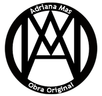

Adriana

Cada pincelada, cada nota musical o cada palabra escrita son portadoras de experiencias, emociones y momentos que dan vida a una narrativa única.
En ese momento, el arte se transforma en un testimonio.
Un reflejo de la humanidad y una ventana que invita al espectador a explorar los rincones mas profundos de su propia percepción